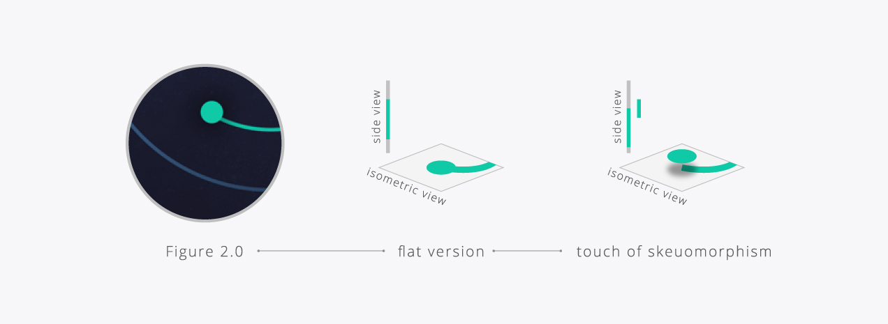
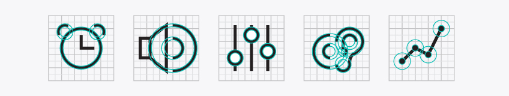
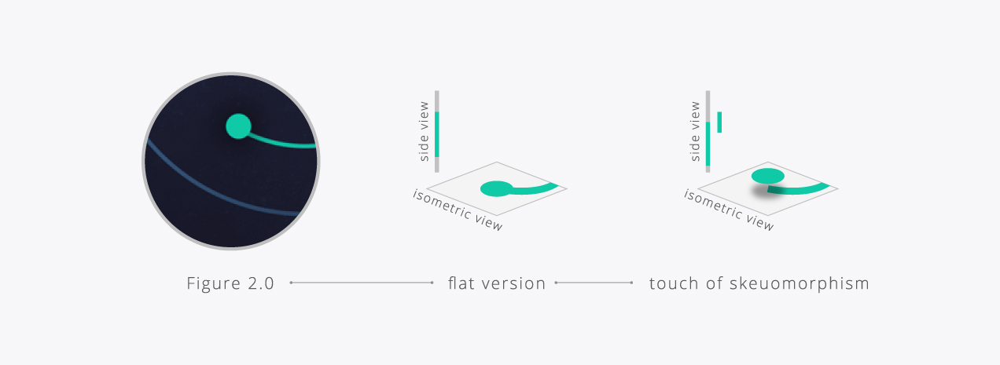
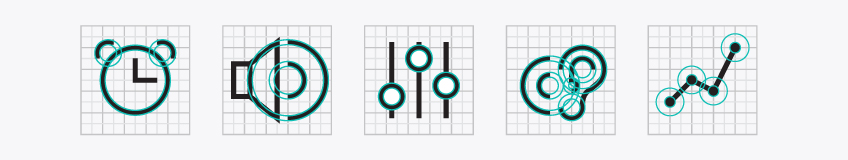
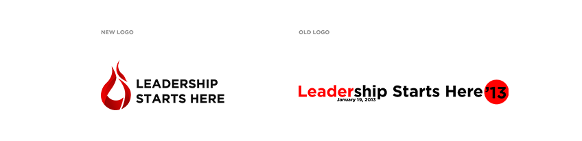
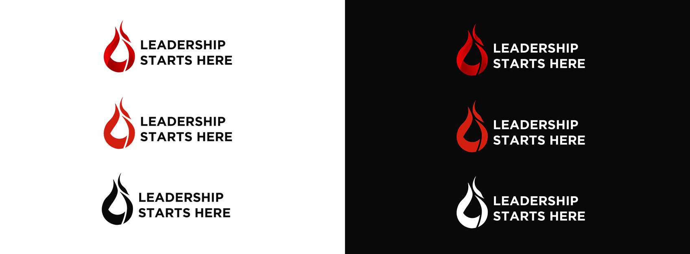
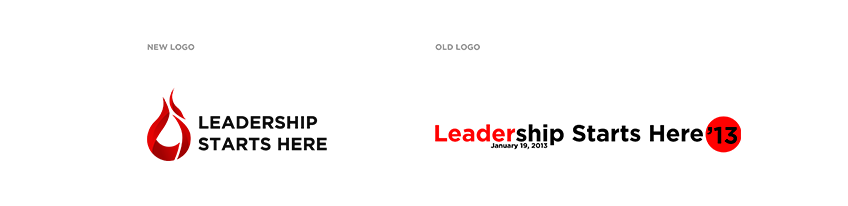
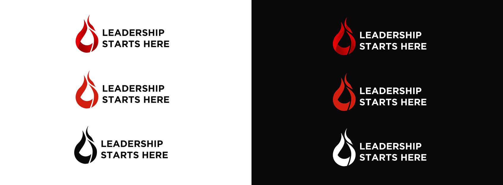
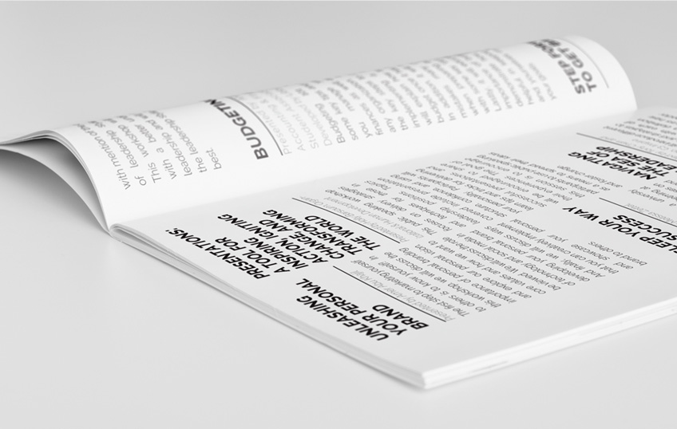
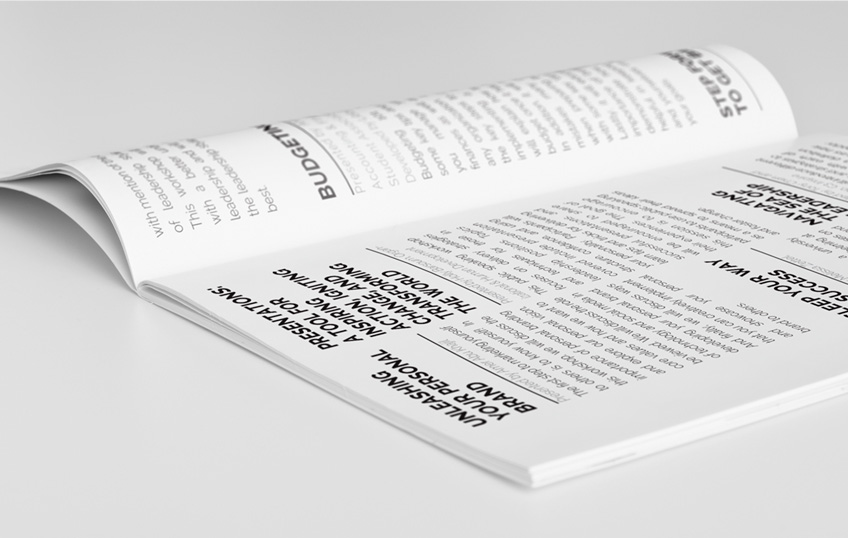

EEE
Affordable home tinnitus therapy
Tinnitus is a condition characterized by ringing, or other noises that appear to be originating in the ear. The nuisance makes sleeping more difficult and disrupts times of concentration. Although there is currently no cure, those who suffer from tinnitus may undergo expensive therapy to train their brain to ignore the disability. EEE was created to provide cheap at-home treatment.
EEE is an app for all
What if you don't have tinnitus? There are still major health benefits to using EEE. It is a mobile application that aims to improve the quality of life during waking and sleeping hours. Sleeping better can greatly increase an individual's immune system, mood, and concentration. Many studies have shown the advantages of listening to ambient noise while studying, working or relaxing.
Find your Tinnitus Tone with EEE
Use the sliders to find a frequency that best matches your tinnitus. Once selected, EEE will craft a personalized white noise that will dull your tinnitus and lessen the distress.
Getting a Better Night's Rest
Using your phone's accelerometer and your smart watch's heart rate monitor, EEE can detect your deepness in sleep. Using this information, EEE can adjust the volume of your tinnitus tone until you fall in REM cycles. Long-term plans will be created to slowly reduce your reliance on the tone and allow you to reach REM cycles independently.
 



Provincial UI Competition
The Canadian Design Exchange's "CONNECT: Enabling Change Post-Secondary School Design Competition" explores design that is usable to the greatest number of people, to the largest extent possible, regardless of their age or ability, across all design disciplines. Ideas that removed barriers for people with disabilities and promote greater inclusion were welcome. I was happy to have been awarded first place in the User Interface/Interactive Design category!


 





 
